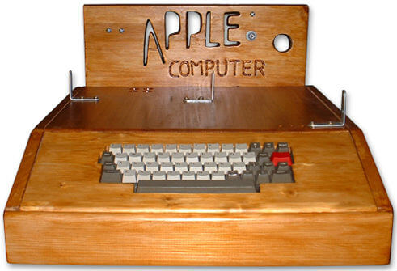
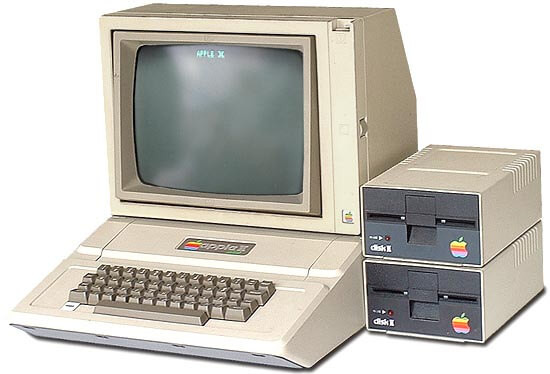
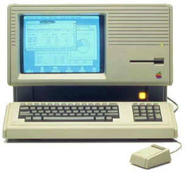
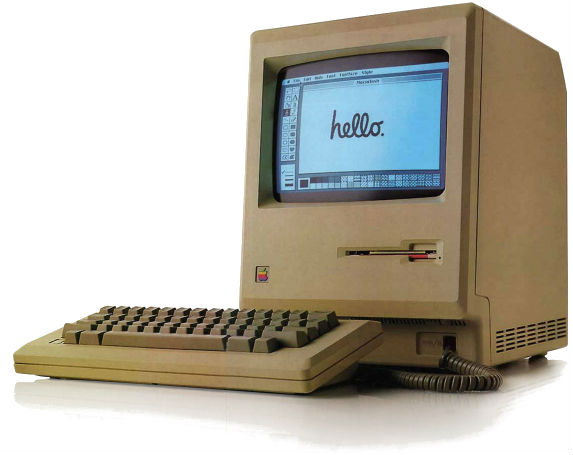
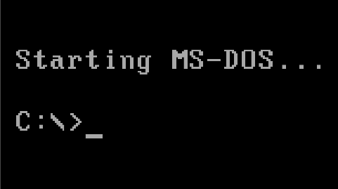
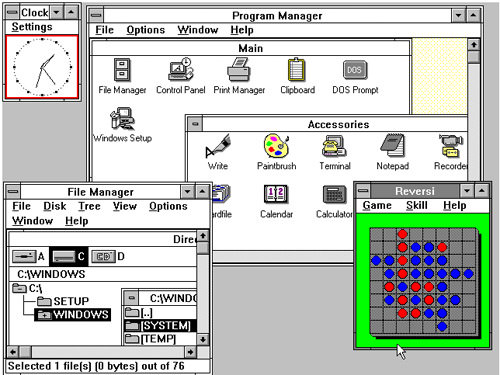

The Apple I was the first product created by Apple in 1967 which consisted of three members; Steve Jobs, Steve Wozniak and Ronald Wayne. Designed and hand-built by Steve Wozniak, the Apple I was sold as a motherboard consisting of a CPU, RAM and basic textual-video chips therefore users were required to attach their own ASCII keyboards and displays. Built to run the operating system BASIC, the Apple I was more user friendly and could be utilized to develop programs and play games. Following its first public introduction at the Homebrew Computer club, Apple I faced great success, with 175 out of the 200 models built being sold.
Following the incorporation of Apple Inc, excluding Ronald Wayne in 1977 Steve Jobs and Steve Wozniak created the Apple II. Officially introduced on April 16 1977 at the first ever West Coast Computer Faire, Apple’s newest computer featured cell-based colour graphics and introduced a new form of data storage; the floppy disk. The Apple II also featured the first app; VisiCalc, a spreadsheet program. Like its predecessor, the Apple II was mainly designed by Wozniak, with Jobs overlooking the development of the computer's casing. The Apple II was Apple Inc’s first product sold to general consumers and proved to be one of the first highly successful microcomputers.
On January 19 1983, Apple Inc released one of the first personal computers to implement a graphical user interface; The Lisa. According to Jobs Lisa stood for Local Integrated System Architecture, yet rumors claimed the computer was named after Jobs’s daughter. Unlike the computers prior to the Lisa, users could easily access the full potential of the pc through a point and a click of the mouse. Unfortunately, the potential of Lisa was quite low due to the high price and poor performance resulting from unreliable floppy discs and lag caused by the complexity of the Lisa OS. Compared to Apple’s prior computers the Lisa was considered a commercial failure.
The Macintosh, presently branded as the Mac was introduced by Jobs on January 10, 1984. Originally the project which started in 1979 alongside the Lisa, was led by Jef Raskin who envisioned a low-cost, easy to use PC for consumers. It would run using a text-based user interface which would enable the ability to run multiple programs and switch between them smoothly, as well as implement special command keys on the keyboard. After being kicked of the Lisa team in 1982, Jobs took over the Macintosh project. The Macintosh was then built implementing the GUI and computing power of the Lisa, yet maintained a low production cost. Following the airing “1984” inspired Macintosh commercial on January 22, 1984 the Macintosh went on sale bundled with it came MacWrite and MacPaint, two applications which highlighted the Macintosh interface’s capabilities. By April 1984, 50 000 Macintoshes were sold, proving to be another one of Apple’s great successes.
The Microsoft Disk Operating System is a command line based operating system released by Microsoft in April 1981. Microsoft co-founders Bill Gates and Paul Allen signed a contract with IBM in 1980, promising them an OS, yet in reality they didn’t have one ready. Microsoft quickly solved this issue by outsourcing to Seattle Computer Products, purchasing their operating system known as QDOS (Quick and Dirty Operating System) or 86-DOS. In August 1981 the IBM PC released equipped with PC-DOS, the OS Microsoft had “created” for IBM. Gates also managed to convince IBM to allow Microsoft to retain its licensing rights separate from the IBM project enabling Microsoft’s MS-DOS to be licensed to various other compatible computers. With its easy to learn commands and relative simplicity Microsoft proved to be successful, and is still in use by many to date.
Windows is an OS written by Microsoft, with the first version being released in November 1985. The initial version, named Windows 1.0 was created as a direct competitor to Apple’s OS. Windows was an extension of the MS-DOS, featuring various components including a calculator, reversi, and a word processor deemed Microsoft Write. It was Microsoft’s first graphic OS which supported multi-tasking. Essentially, the idea of a graphical user interface OS was stolen from Apple, therefore Windows 1.0 was almost an exact copy of the Apple OS. As time went by, Windows saw many updates and is one of the most used operating systems to date.
